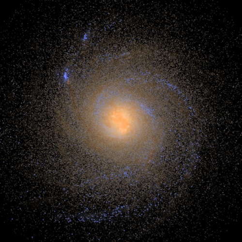

Numerical Astrophysics on Galaxy formation
 Modelling feedback to produce realistic galaxies This is what I want show 1
This is what I want show 1
Modelling feedback to produce realistic galaxies This is what I want show 2
This is what I want show 2
Modelling feedback to produce realistic galaxies This is what I want show 3
This is what I want show 3